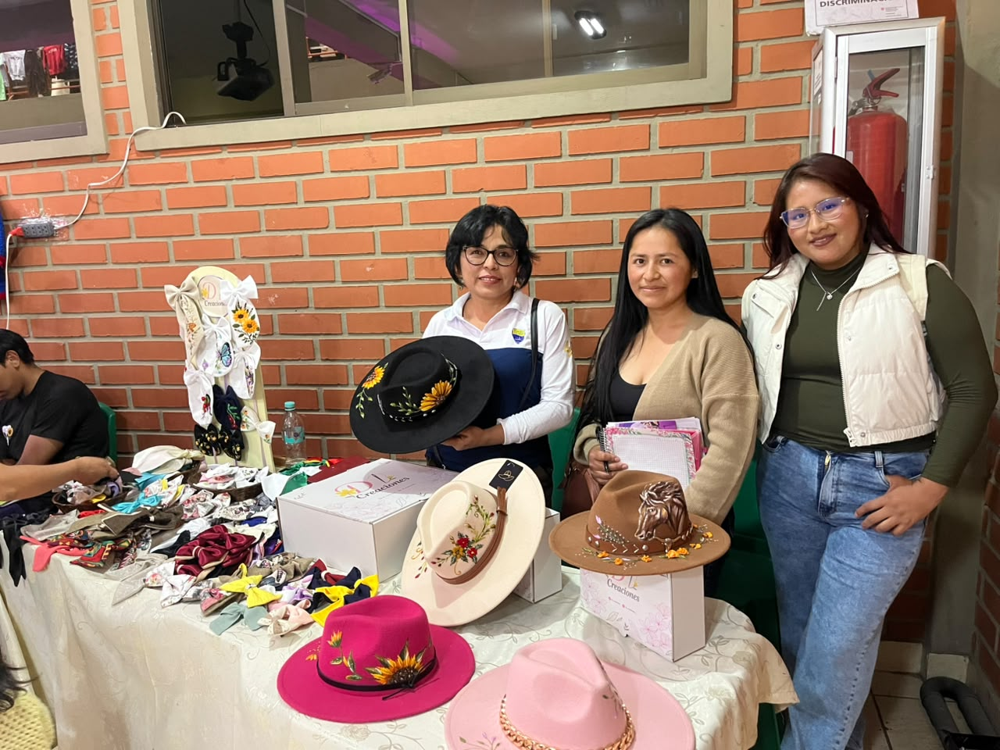
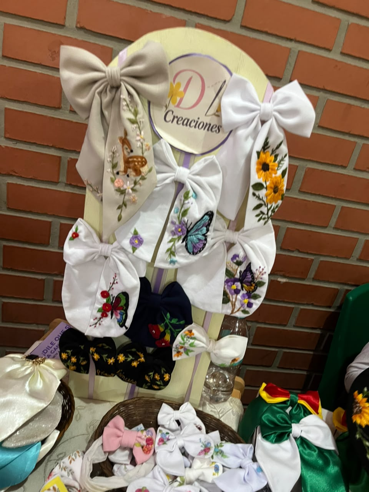
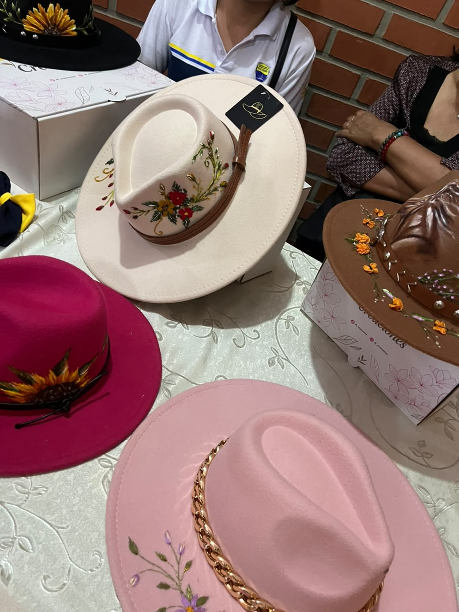

FEXPO ITSEC 2026 - ¡Bienvenidos!
En la FEXPO ITSEC Sucre se presentan diferentes emprendimientos que destacan por su creatividad y dedicación. Entre ellos se encuentra D.i Artesanía, un negocio dedicado al diseño y elaboración de sombreros y accesorios personalizados con bordados.



D.i Artesanía es un emprendimiento dedicado a la creación de productos artesanales que combinan creatividad, diseño y trabajo manual. Su actividad principal consiste en elaborar sombreros bordados, así como lazos y coletas decoradas con bordados que aportan un estilo original y personalizado.
El emprendimiento lleva aproximadamente dos años de funcionamiento y comenzó con un capital inicial de 100 bolivianos. A partir de una inversión pequeña, ha desarrollado una propuesta comercial basada en la creatividad, la elaboración artesanal y la atención a los gustos de sus clientes.
DI Artesanía no cuenta con una tienda física, por lo que utiliza las redes sociales para mostrar sus productos, promocionar sus diseños y recibir pedidos. Este medio le permite llegar a clientes interesados en accesorios bordados sin necesidad de tener un establecimiento comercial.
Uno de los principales desafíos del emprendimiento es la falta de mano de obra. Debido a que la elaboración de los productos requiere tiempo y trabajo manual, resulta difícil atender todos los pedidos cuando la demanda aumenta. Esta situación limita su capacidad de producción y puede ocasionar demoras en las entregas.
Para continuar creciendo, DI Artesanía podría buscar personas capacitadas que colaboren en la elaboración de sus productos, organizar mejor los tiempos de producción y establecer plazos de entrega de acuerdo con su capacidad de trabajo.
La participación de DI Artesanía en la FEXPO ITSEC permite dar a conocer sus creaciones, promocionar sus productos y demostrar cómo una idea de negocio puede desarrollarse con creatividad, esfuerzo y una inversión inicial reducida.